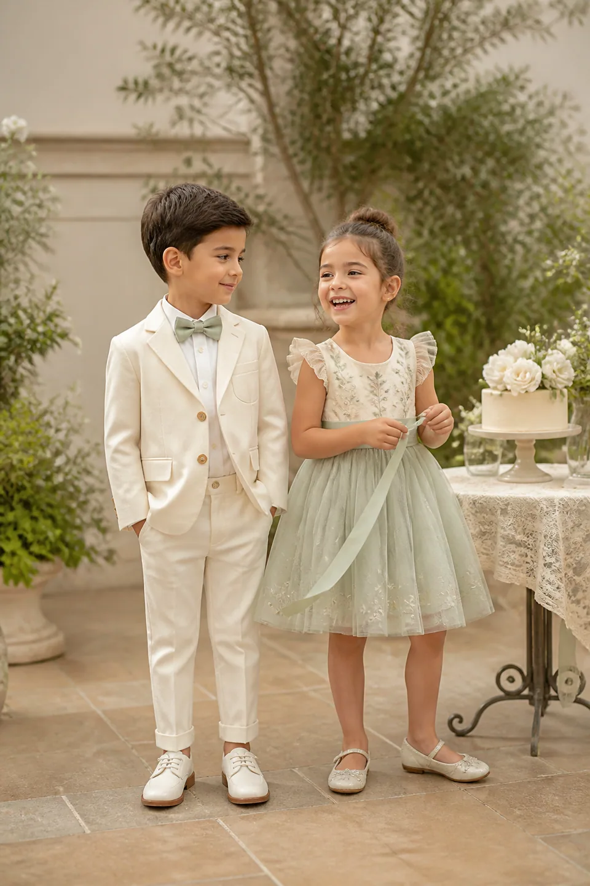
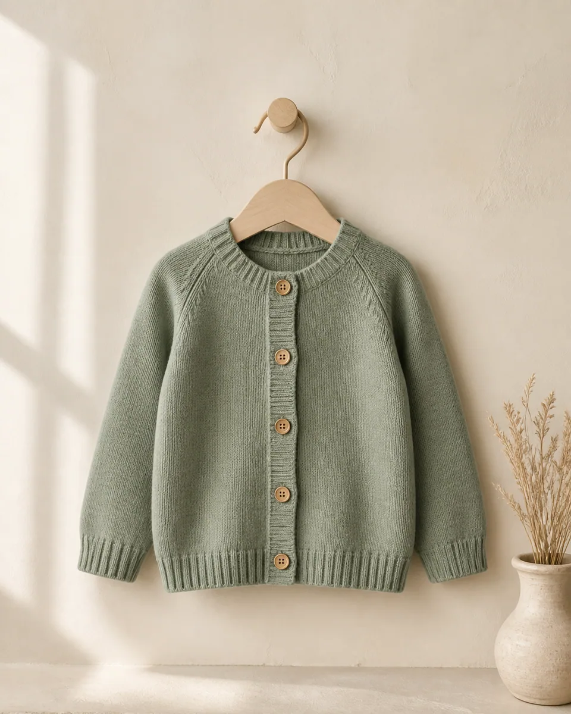
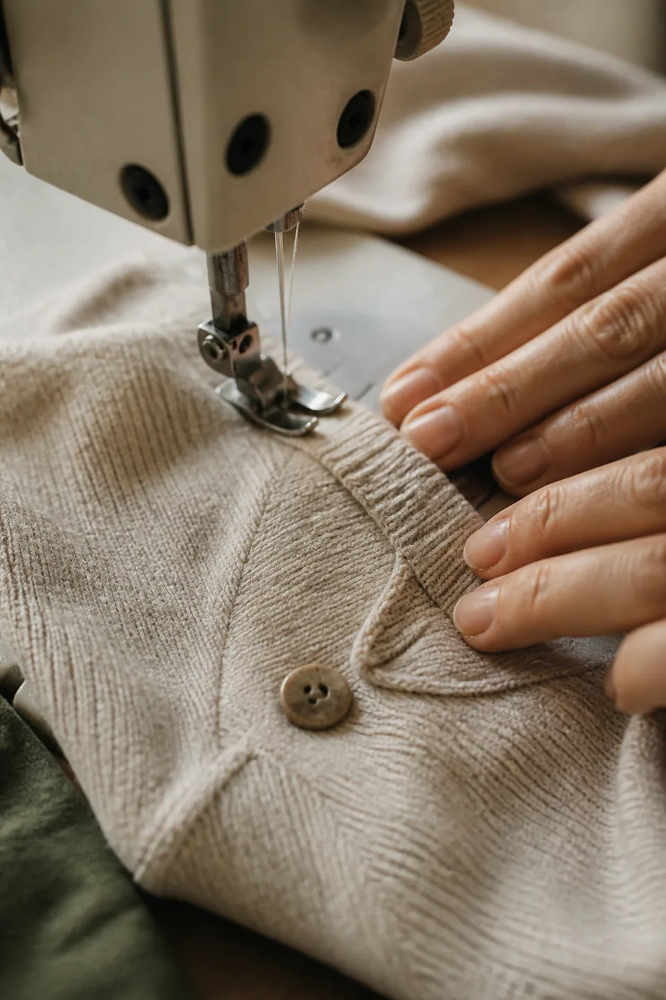
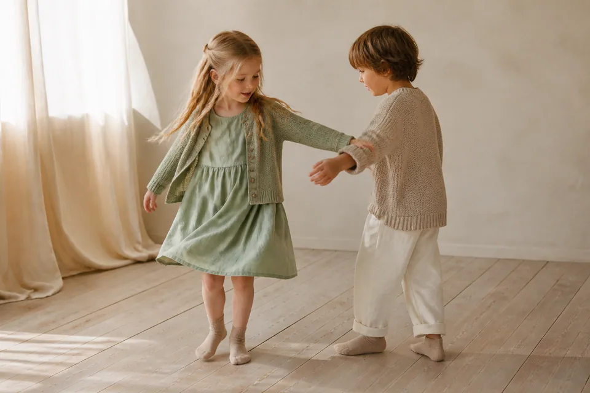
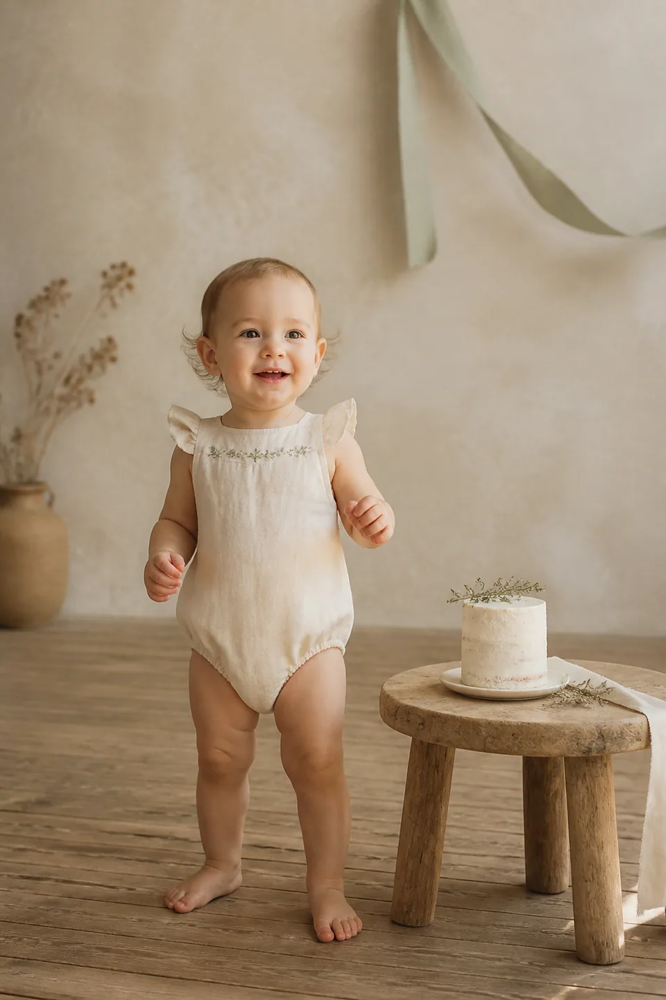
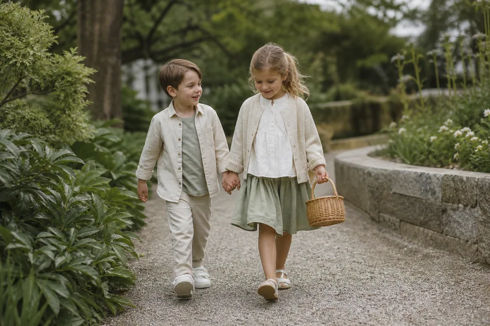
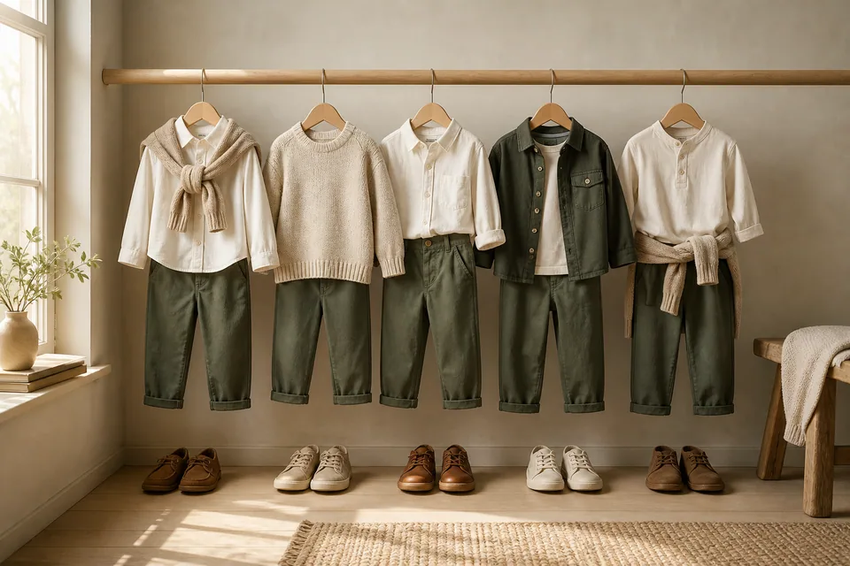
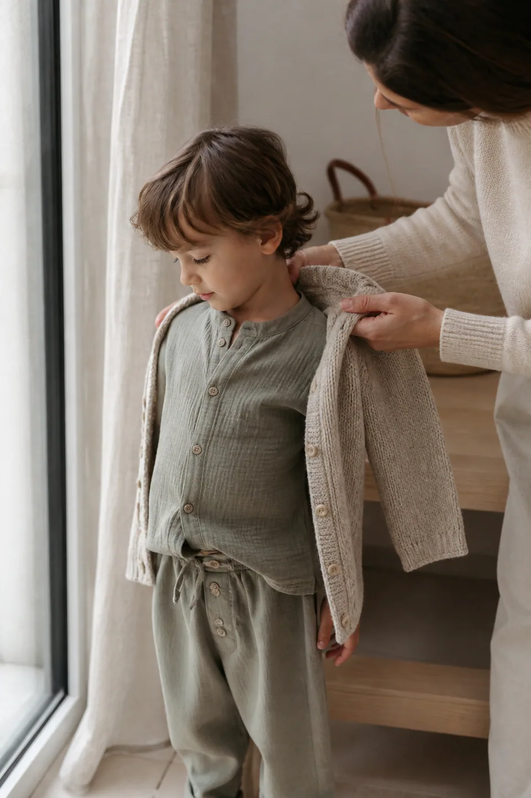
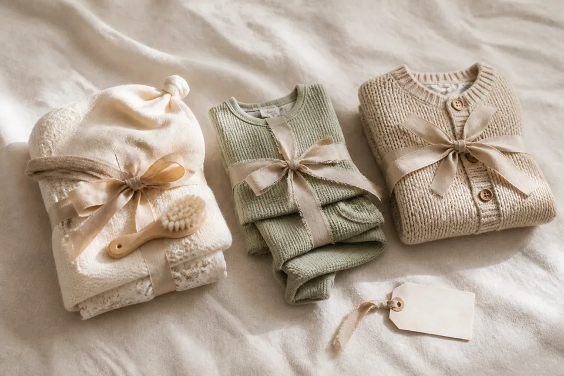
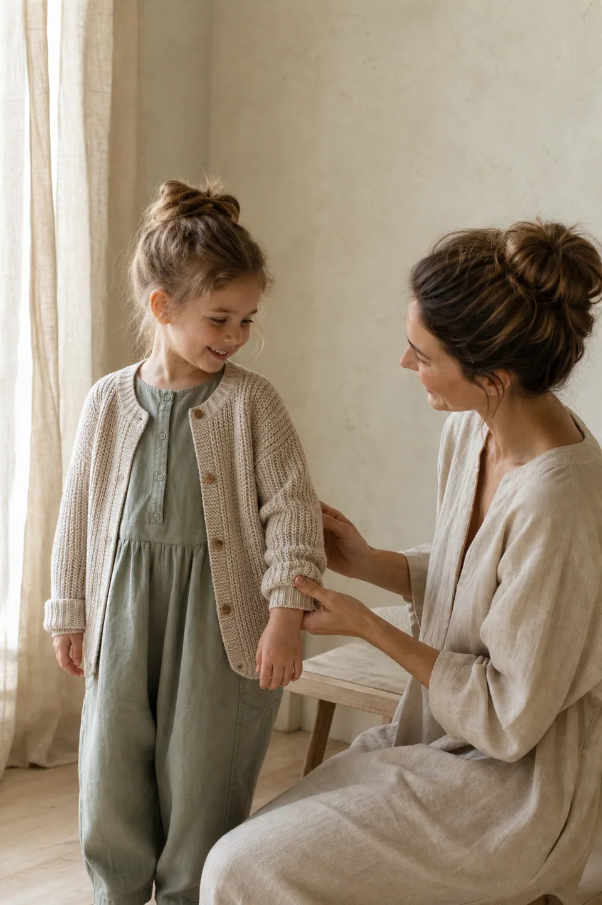

The new edit
Childhood,
01 04
The Meadow Edit · Maison Miette 2026
Scroll
Childhood,
dressed in wonder
Quietly beautiful layers made for crisp light, open fields and every story waiting just beyond the garden.
Little chapters, beautifully lived
Three thoughtful edits for the moments that shape their earliest wardrobes.

03
Little Celebrations
Special pieces for candles, wishes and beautifully remembered moments.
View Story
The knitwear collection
Signature piece · 01
Heritage Knit Set
A quietly refined pairing, knitted with a soft hand and an heirloom sensibility. Made for slow mornings, family gatherings and every small adventure between.
₹4,850100% extra-fine merino wool · naturally breathable
View Product
The feel of it
Material study · 02
Softness you can see, comfort they can feel
We choose each fabric by touch first—looking for natural breathability, a gentle drape and the resilience to follow childhood wherever it goes. Every piece is finished with smooth seams and room to move, so thoughtful construction is felt without ever getting in the way.
- 01Breathable cottonAiry fibres, naturally soft against skin.
- 02Gentle seamsConsidered finishes with less bulk and rub.
- 03Easy movementRelaxed shapes made to bend, reach and play.


- Composition
- 100% natural fibres
- Handle
- Soft-washed finish
- Weight
- Light · 180 GSM
- Care
- Cool gentle wash
An edit for every little occasion
Four considered wardrobes for the days that become their most-loved memories.

01
A first chapter
First Birthday
Choose a softly tailored set with a touch of heirloom charm—special enough for candles, comfortable enough for cake-covered cuddles.
View the Edit
02
Out and about
Family Day Out
Build around breathable layers and relaxed shapes that move easily from slow brunches to one more run through the garden.
View the Edit03
Gather together
Festive Moments
Pair rich forest tones with warm neutrals and one beautifully made detail for celebrations that feel polished, never precious.
View the Edit04
Worth remembering
Picture Day
Keep the silhouette timeless: a crisp collar, fine knit and composed colour palette that will still feel lovely years from now.
View the EditStyled together, made to move
A complete look should feel considered without feeling complicated. Start with a breathable base, add an easy layer and finish with pieces that can follow every part of their day.
Stylist’s note: roll the cardigan cuff once to let the ivory sleeve soften the look.
Notes on dressing little lives
Practical wardrobe ideas, considered through the lens of comfort, longevity and quietly beautiful style.

Issue 01How to build an easy school-week wardrobe
A simple five-day formula that makes mornings calmer: dependable bases, interchangeable layers and a palette where everything belongs together.
Read Note
Issue 02Choosing comfortable layers for changing weather
Lightweight pieces that add warmth without adding bulk or limiting movement.
Read Note
Issue 03A simple guide to gifting by age
Thoughtful fabric, flexible sizing and useful silhouettes for every early chapter.
Read Note“The clothes feel special, but never too precious for real life. They wash beautifully, move with her, and somehow make ordinary mornings feel considered.”
Purchased the Fine Knit Cardigan and Soft Twill Trouser

Easy Size GuidanceClear, considered help for every fit.
Thoughtful PackagingBeautifully wrapped with less waste.
Secure CheckoutProtected, simple and dependable.
Friendly SupportReal guidance from our care team.
The Little Circle
A quieter way to hear what’s new
Join us for early collection previews, thoughtful gifting ideas, seasonal edits and the occasional special offer—shared gently, never noisily.